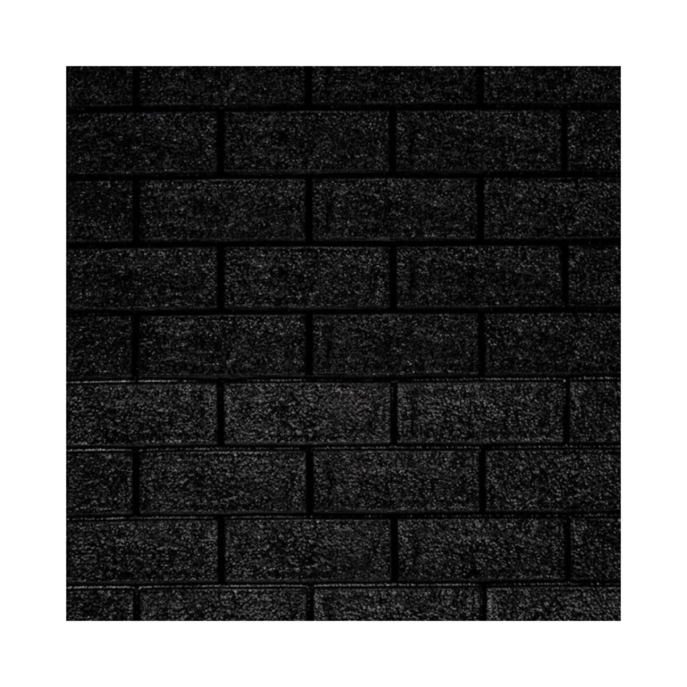

Cielorrasos
Perfil U Machimbre PVC 2,9m NEGRO
Sistema machimbrado de PVC para cielorrasos y revestimientos interiores de mantenimiento simple.
- Formato
- Consultar formato
- Disponibilidad
- Sujeta a confirmación
- Modalidad
- Cotización
- Presentación
- Caja de 4 unidades
Precio y disponibilidadConsultar precio
Te ayudamos a calcular cantidades, accesorios y desperdicio antes de confirmar el pedido.